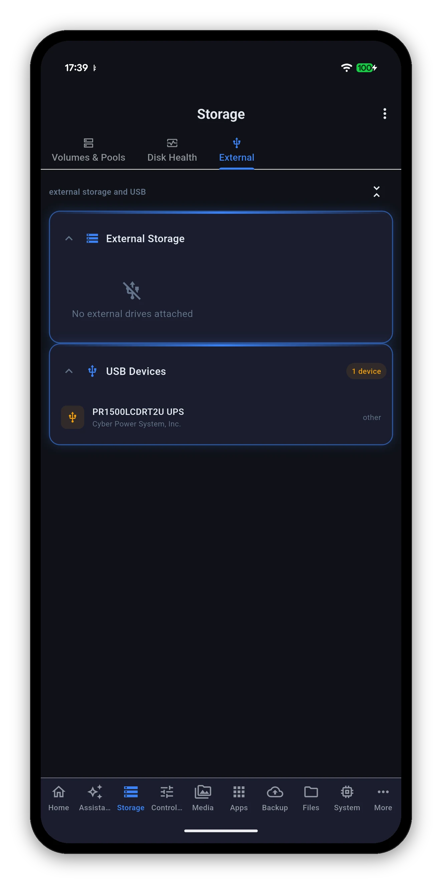

Three sub-views: Volumes & Pools for capacity and RAID, Disk Health for SMART and temperature per drive, and External for anything plugged into the back.

Each volume gets a card with its name, its RAID type, its status and how many drives back it, over a usage bar with used, percentage, total and free.
| Shown | Meaning |
|---|---|
| Volume name | As DSM names it - VOLUME_1, and so on. |
| RAID type | RAID 5, SHR, RAID 1, Basic - whatever the pool underneath actually is. |
| Status | The volume's own state: normal, degraded, crashed. A degraded array is the one thing on this screen worth acting on today. |
| Drive count | How many physical drives the volume spans. |
| Usage bar | Green normally, amber past 80% and red past 90%. Those are the same thresholds the health badge uses. |
| Used / Total / Free | All three, because "70% full" and "13 TB free" answer different questions. |
Below the volumes, every physical drive by bay number.
The Disk Health sub-view is the same drives with more room: capacity, type, temperature and SMART state each get their own chip, and every drive carries a Quick SMART Test button.

Nothing here is a guess about your hardware - these are the points at which the app changes a colour and, where relevant, the home screen's health badge.
| Reading | Amber at | Red at |
|---|---|---|
| Drive temperature | 45°C | 55°C |
| System temperature | 50°C | 60°C |
| Volume usage | 80% | 90% |
| UPS charge | below 50% | below 20% |

Two sections: External Storage for drives you can mount and eject, and USB Devices for everything else plugged in - a UPS, a printer, a dongle.
Storage is the one place where a mistaken tap is not recoverable, so the app reads far more than it writes.